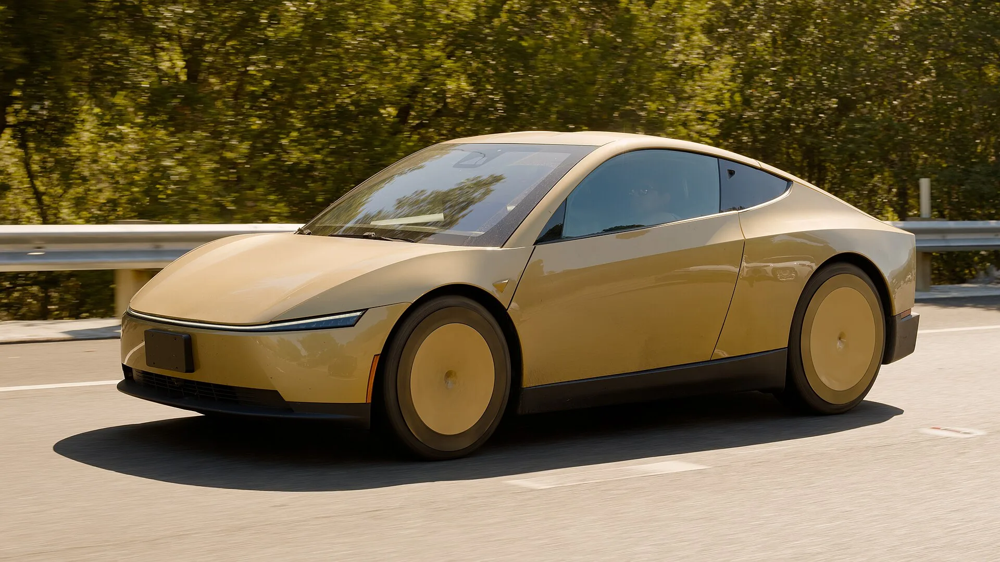

▲ 테슬라의 2인승 완전자율주행 로보택시 '사이버캡'. 지난 9월 3일부터 텍사스 오스틴에서 실제 유료 운행에 투입됐다 ⓒ Wikimedia Commons
화면 왼쪽 구석에 낯선 아이콘 하나가 떠 있었다. 눌러보니 저속 주행용 '조이스틱' 인터페이스였다. 핸들도 페달도 없는 차 안에서, 탑승객이 우연히 발견한 이 화면은 지금 테슬라 사이버캡을 둘러싼 논쟁을 압축해서 보여준다.
테슬라의 2인승 완전자율주행 로보택시 사이버캡(Cybercab)이 지난 9월 3일 텍사스 오스틴에서 유료 상업 운행에 들어간 지 3주가 지났다. 그사이 미국 도로교통안전국(NHTSA)의 인증 조사가 시작됐고, 안전요원 없는 무인 운행 논란과 요금 비교, 숨은 조이스틱 발견까지 굵직한 이슈가 쏟아졌다. 실제로 확인된 사실만 시간순으로 정리했다.
1. 투입 배경과 타임라인 — 예고된 8월 말이 9월 3일로
사이버캡의 상업 서비스 개시는 원래 8월 말로 예고됐지만, 실제로는 9월 3일 이뤄졌다. 테슬라는 이날 오스틴 일부 지역에서 사이버캡을 기존 '로보택시' 호출 앱에 편입시켜 승객을 태우기 시작했다. 다음 날인 9월 4일에는 공식 행사를 열어 서비스를 대외적으로 알렸다.
텍사스 주에 등록된 테슬라 로보택시(모델Y+사이버캡)는 총 448대이며, 이 중 사이버캡은 초기 45대로 시작해 9월 18일 기준 58대까지 늘어난 것으로 확인된다. 여전히 오스틴 전역이 아니라 제한된 서비스 구역 안에서만 호출이 가능하다.
| 시점 | 내용 |
|---|---|
| 9월 3일 | 오스틴 일부 지역에서 사이버캡 유료 운행 개시(초기 45대) |
| 9월 4일 | 테슬라 공식 론칭 행사, NHTSA 감사 질의(AQ26002) 착수 |
| 9월 7일 | 탑승객이 화면 속 조이스틱 인터페이스 발견, 소셜미디어 공개 |
| 9월 10일 | NHTSA, 21개 질의 담긴 특별명령 발동(자세한 내용은 본지 9월 18일자 기사 참고) |
| 9월 18일 기준 | 사이버캡 58대(모델Y 포함 전체 로보택시 448대) 운행 중 |
| 9월 20일 기준 | NHTSA 답변 시한(9월 30일) 10일 앞둠 |

▲ 도로 위를 실제로 달리는 사이버캡. 전시장 밖에서도 주행 모습이 속속 포착되며 실전 투입이 확산되고 있음을 보여준다 ⓒ Daniel Lu(dllu), Wikimedia Commons (CC BY-SA 4.0)

▲ 공개 행사에서 첫선을 보인 사이버캡. 그로부터 약 1년 만에 텍사스 오스틴 도로 위 실제 운행으로 이어졌다 ⓒ Wikimedia Commons
2. 차량 제원과 디자인 — 핸들도, 페달도, 사이드미러도 없다
사이버캡은 애초부터 '사람이 운전할 가능성' 자체를 배제하고 설계된 차량이다. 2인승 좌석에 걸윙(나비형) 도어를 채택했고, 실내에는 스티어링 휠과 가속·브레이크 페달이 상시 장착돼 있지 않다. 사이드미러도 없이 카메라로 대체했다.
| 항목 | 내용 |
|---|---|
| 승차 정원 | 2인승 |
| 도어 | 걸윙(나비형) 도어 |
| 조작계 | 스티어링 휠·페달·사이드미러 상시 미장착 |
| 자율주행 방식 | 라이다 없이 카메라+AI(AI4 컴퓨터) 기반 |
| 탑승 시작 | 스마트폰 앱 또는 차량 내부 화면으로 출발 명령 |
| 추정 제조원가 | 웨이모 로보택시(대당 약 15만 달러 추정) 대비 약 7분의 1 수준 |
라이다 없이 카메라만으로 주행한다는 점은 테슬라가 줄곧 강조해 온 '비전 온리(Vision-only)' 전략의 연장선이다. 회사 측은 이 방식이 라이다·레이더를 갖춘 경쟁 로보택시보다 제조 단가를 크게 낮출 수 있다는 입장이다.

▲ 사이버캡 실내. 운전대와 페달 없이 화면 인터페이스만으로 탑승객이 차량을 조작한다 ⓒ Wikimedia Commons
3. 운행 지역과 요금 — 우버보다 비싸거나, 싸거나
오스틴 고객은 기존 '로보택시' 호출 앱으로 사이버캡을 부를 수 있다. 목적지를 입력하면 예상 요금이 먼저 표시되고, 탑승 후 스마트폰이나 차량 내부 화면을 통해 출발 명령을 내리는 방식이다. 다만 서비스 구역은 오스틴 전역이 아니라 일부 지역으로 제한돼 있다.
요금은 거리에 따라 15~21달러 수준으로 확인됐다. 2마일(약 3.2km) 미만의 짧은 거리는 15달러 안팎에 형성됐다. 다만 일관되게 저렴한 것은 아니다. 현지 매체가 몬토폴리스에서 ACL 라이브까지 같은 구간을 비교한 결과, 테슬라 로보택시(모델Y 기준)는 19.58달러, 우버(웨이모 연계)는 12.96달러로 오히려 테슬라 쪽이 비싼 사례도 나왔다.
📍 정식 요금제는 아직
테슬라는 아직 사이버캡의 공식 요금 체계를 확정 발표하지 않았다. 경영진은 "이코노미 가격에 퍼스트클래스 경험"을 제공하겠다고 공언했지만, 본격적인 과금은 서비스가 안정화된 이후에나 시작될 전망이다.
오스틴 로보택시 운행 구역과 요금 관련 상세 내용은 현지 매체 보도에서 확인할 수 있다. 관련 보도 바로가기
4. 안전요원 없이 달린다 — 조이스틱 논란과 소방당국의 우려
사이버캡의 가장 큰 특징은 동승 안전요원이 없다는 점이다. 앞서 2025년 시작된 모델Y 기반 로보택시 서비스는 조수석에 비상시 개입할 수 있는 안전요원을 태웠지만, 사이버캡은 처음부터 완전 무인(unsupervised) 운행을 전제로 설계됐다. 실제로 170회 이상 추적된 운행 기록에서 안전요원이 동승한 사례는 확인되지 않았다.
그런데 지난 9월 7일, 한 탑승객이 소셜미디어에 공개한 영상이 논란을 키웠다. 차량 실내 화면 한쪽에서 시속 11km 안팎의 저속 수동 조작이 가능한 '조이스틱' 인터페이스가 우연히 발견된 것이다. 실제 조작 시도에는 반응하지 않았지만, 일반 탑승객이 왜 이런 메뉴에 접근할 수 있었는지, 어떤 안전장치가 접근을 막고 있는지는 아직 명확히 설명되지 않았다.
✅ 오스틴 소방당국이 던진 질문
· 오스틴 소방국 매튜 맥클리어니 대위는 화면 조작만으로 차량을 이동시키는 방식이 "만능 해결책은 아니다"라고 지적
· 응급 상황에서 구조 요원이 손으로 직접 차량을 제어해야 할 때, 화면 인터페이스만으로 충분한지 근본적 의문 제기
· 소방당국은 무인 로보택시에 대한 연방 차원의 통일된 안전 표준 마련 필요성을 주장

▲ 사이버캡 측면. 응급 상황에서 문을 여는 방식과 수동 개입 수단이 안전 논란의 핵심으로 떠올랐다 ⓒ Wikimedia Commons
5. NHTSA 인증 조사 — 이미 진행 중인 감사, 9월 30일이 분수령
본지가 지난 9월 18일 보도한 대로, NHTSA는 사이버캡의 상업 서비스 개시 직후 자체인증(self-certification) 절차를 정조준한 감사에 착수했다. 다른 자율주행차 업체들이 대부분 '파트 555 예외 승인'(연간 최대 2,500대 한도)이라는 별도 경로를 통해 규제 당국의 사전 심사를 받는 것과 달리, 테슬라는 자사 차량이 연방자동차안전기준(FMVSS)을 자체적으로 충족한다고 선언하는 자기인증 방식을 택했다. 심사를 먼저 받지 않는 만큼 상용화 속도는 빠르지만, 입증 책임은 전적으로 제조사에 있다.
NHTSA는 9월 3일 감사 질의(AQ26002)를 연 데 이어, 9월 10일에는 21개 항목의 특별명령을 발동했다. 핵심은 "브레이크 페달이 상시 장착돼 있지 않은 차량을 어떻게 연방기준에 맞춰 인증했는가"다. 테슬라는 9월 30일까지 선서 진술서 형태로 답변해야 하며, 불성실한 답변에는 최대 1억 3,935만 달러(약 1,390억 원)의 민사 과징금이 부과될 수 있다.

▲ 전시장에 놓인 사이버캡. NHTSA는 이 차량의 안전기준 인증 근거 자체를 정조준해 조사 중이다 ⓒ Wikimedia Commons
NHTSA 조사의 21개 질의 항목과 배경은 본지 이전 기사에서 자세히 다뤘다. NHTSA 공식 발표 바로가기
6. 업계 반응·경쟁사 비교 — 웨이모·죽스와 다른 길을 걷다
사이버캡이 오스틴에 뿌리내리려면 결국 웨이모, 죽스 같은 선발주자와 같은 도로에서 경쟁해야 한다. 웨이모는 현재 미국 전역에서 4,000대 이상을 운영하며 압도적인 규모를 갖췄다. 반면 사이버캡은 오스틴에만 58대(9월 18일 기준)에 그친다.
| 구분 | 테슬라 사이버캡 | 웨이모 |
|---|---|---|
| 센서 | 카메라+AI(라이다 없음) | 라이다·레이더·카메라 복합 |
| 운영 규모(미국) | 오스틴 58대(9월 18일 기준) | 전역 4,000대 이상 |
| 규제 경로 | 자기인증(Self-certification) | 파트 555 예외 승인 등 |
| 동승 안전요원 | 없음(완전 무인) | 없음(완전 무인) |
| 추정 대당 원가 | 웨이모 대비 약 7분의 1 수준(테슬라 측 추산) | 대당 약 15만 달러 추정 |
한 현지 취재진은 승차감과 좌석 공간, 앱 편의성에서는 사이버캡이 앞선다는 평가를 내놓기도 했다. 하지만 규모의 격차와 규제 리스크는 여전히 테슬라가 넘어야 할 산이다. NHTSA 조사 결과에 따라 운행 지역이 더 확대될 수도, 반대로 제동이 걸릴 수도 있는 상황이다.

▲ 라이다 센서를 탑재한 웨이모 로보택시 차량들. 미국 전역에서 4,000대 이상을 운영하며 사이버캡보다 압도적으로 많은 규모를 갖췄다 ⓒ Wikimedia Commons
7. 요약
테슬라 사이버캡은 9월 3일 텍사스 오스틴에서 유료 운행에 실제 투입됐다. 핸들과 페달이 없는 2인승 구조로 안전요원 없이 완전 무인으로 운행되며, 요금은 15~21달러 수준에서 형성되고 있다.
투입 직후 화면 속 숨은 조이스틱 인터페이스가 논란이 됐고, 오스틴 소방당국은 응급 상황 대응 체계에 우려를 표했다. NHTSA는 자기인증 절차 자체를 겨냥한 감사에 착수해 9월 30일까지 답변을 요구한 상태다.
웨이모(4,000대 이상)에 비하면 오스틴 58대(9월 18일 기준)라는 규모는 아직 미미하지만, 낮은 추정 제조원가를 앞세운 테슬라의 확장 전략이 규제 심사를 통과할 수 있을지가 다음 관전 포인트다.